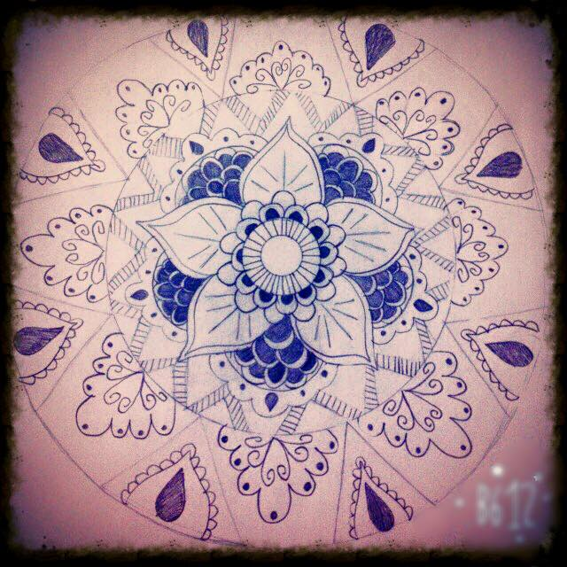

What do I do on my fri time? is a question that everyone of us has been asked.
Well, I love listining to music, colorin or drowing "Mandala Art", walking outside,
shopping"a normal girl thing" and lastley I love photography and I have a passion to iterior designe.

Utbildning
I have studied "Bussiness Management" in my home land.
Here in sweden I am thinking about studying "IT och Ekonomi" or something with desing,
like interior design, grafisk design or web design.
I work as an Arabic Teacher nowadays, but to be honest teaching is not my thing.
Anyways having a job is good and this is why I accept the teaching job.
It's quite interesting though.